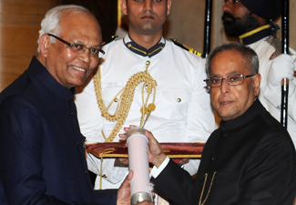

Padma Vibhushan (2014)
The Padma Vibhushan is awarded by the President of India in recognition of distinguished service to the nation. It is the second highest civilian award of India.
Business Week Star of Asia (2005)
This award is given by Business Week USA to eminent Asians who have been path breakers in their fields.
Padma Bhushan (2000)
The Padma Bhushan is India’s third highest civilian honour. It is conferred by the president on individuals who have made valuable contributions to the nation.
Fellow of the Royal Society (FRS) (1998)
The Royal Society of UK is made up of Fellows – eminent scientists, engineers and technologists from the UK and the Commonwealth. Fellows are elected for life through a peer review process on the basis of excellence in science.
AIMA - JRD TATA Corporate Leadership Award (1998)
All India Management Association confers this award to recognise outstanding contributions in management, entrepreneurship and leadership.
Padma Shri (1991)
The Padma Shri is awarded by the President of India to recognise notable contributions to the country. It is the nation’s fourth highest civilian award.
Shanti Swarup Bhatnagar Prize (1982)
The Bhatnagar Prize is awarded to Indians who have made important and outstanding contributions to human knowledge and progress through research in science and technology.